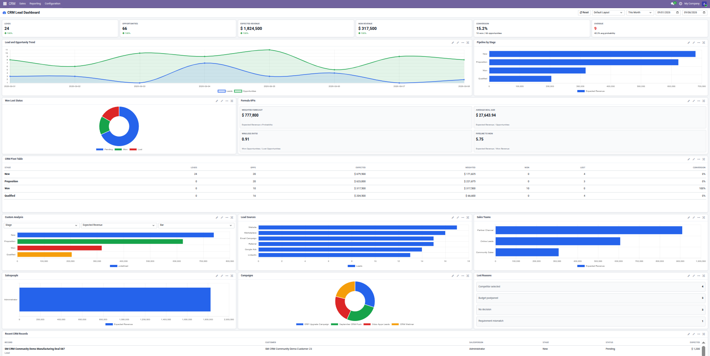

This module adds an interactive CRM dashboard with KPI cards, charts, pivot table, custom analysis, date presets, and layout controls. CRM opens directly on the dashboard, helping sales teams monitor pipeline performance without extra reporting menus.
Track leads, opportunities, revenue, conversion, overdue items, and comparison percentages.
Review trend, stage funnel, won/lost status, sources, teams, salespeople, and campaigns.
Use selectable group by, measure, chart type, formula KPIs, and embedded pivot table.
Drag, resize, rename, reset, and save dashboard layout preferences in the browser.
CRM opens directly to the dashboard view.
Use date presets or custom date range filters.
Check KPIs, charts, pivot rows, and custom analysis.
Click KPI cards or recent records to open matching CRM documents.
Monitor sales pipeline performance with KPIs, trend charts, stage funnel, won/lost chart, formula KPIs, custom analysis, and pivot table in one screen.

Watch the dashboard filters, layout controls, chart panels, and CRM analytics flow in action.
CRM application opens directly on the dashboard.
KPI cards for leads, opportunities, expected revenue, won revenue, conversion rate, and overdue opportunities.
Date presets including Today, Last 7 Days, Last 30 Days, Last 365 Days, monthly, quarterly, yearly, and custom ranges.
Charts for trend, stages, won/lost status, sources, teams, salespeople, campaigns, and lost reasons.
Embedded CRM pivot table with lead count, opportunity count, revenue, won, lost, and conversion values.
Custom analysis panel with selectable group by, measure, and chart type.
Dashboard panels can be dragged, resized, renamed, reset, and saved in the browser.
Supports Odoo Community and Enterprise.